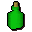
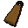
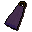
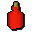

Cape
| Config name | black_cape |
| Item id | 1019 |
| Value | 7 gp |
| Weight | 1lb |
| Members | No |
| Tradeable | Yes |
| Stackable | No |
| Equip slot | back |
| Options | Wear |
| Defined in | scripts/skill_crafting/configs/dye_cape/capes.obj |
| Equipment stats | Slash def 1, Crush def 1, Range def 2 |
Cape
A warm black cape.
Used to make
| Skill | Level | XP | Ingredients | Tool | How | Where | Makes |
|---|---|---|---|---|---|---|---|
| Crafting | 1 | 2.5 | use on item | any coloured cape can be re-dyed, not just the plain one | |||
| Crafting | 1 | 2.5 |  Green dye, | use on item | any coloured cape can be re-dyed, not just the plain one | ||
| Crafting | 1 | 2.5 | use on item |  Capeany coloured cape can be re-dyed, not just the plain one | |||
| Crafting | 1 | 2.5 | use on item |  Capeany coloured cape can be re-dyed, not just the plain one | |||
| Crafting | 1 | 2.5 |  Red dye, | use on item | any coloured cape can be re-dyed, not just the plain one | ||
| Crafting | 1 | 2.5 | use on item | any coloured cape can be re-dyed, not just the plain one |
Dropped by
| NPC | Level | Quantity | Rarity | Via | Notes |
|---|---|---|---|---|---|
| 5 | 1 | Always |
Sold at
| Shop | Shopkeeper | Stock |
|---|---|---|
| Barkers' Habidashery | 5 |
Referenced in scripts
scripts/_test/scripts/debug/debug_quests.rs2scripts/drop tables/scripts/highwayman.rs2scripts/skill_crafting/scripts/dye_cape/dye_cape.rs2